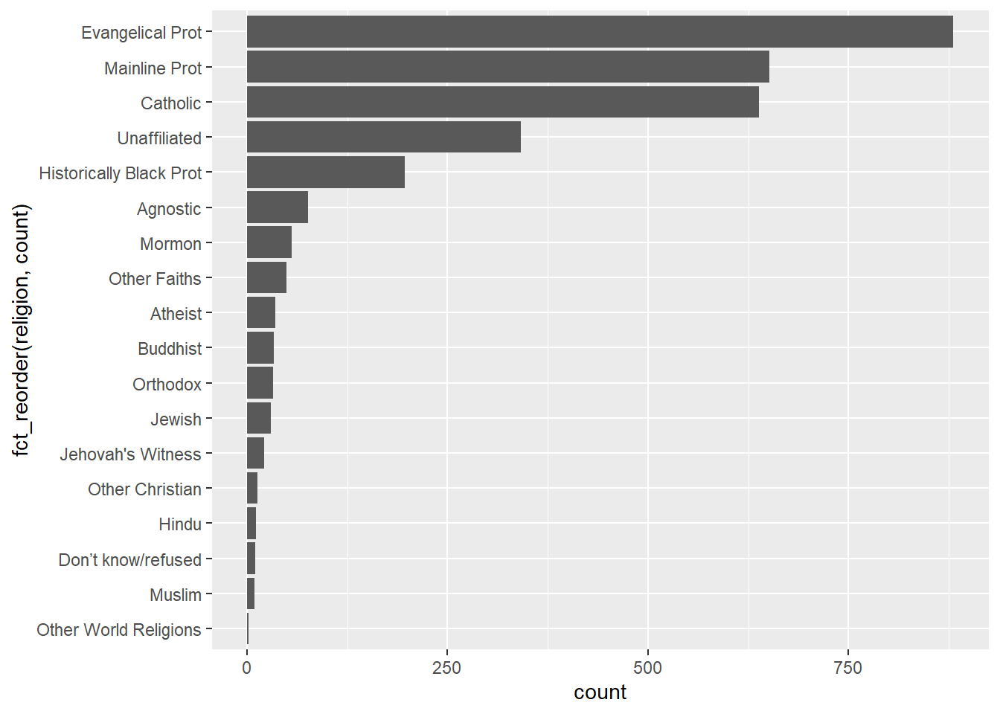

library(tidyverse)Pivot
Tidy data
Reshape data to align your data format to your analysis.
https://tidyr.tidyverse.org/
Pivot Vignette: https://tidyr.tidyverse.org/articles/pivot.html
- Make messy data into tidy data
- Every variable is a column
- Every row is an observation
- Every cell is a single value
- Pivoting (i.e. reshaping)
| tidyr | gather | spread |
|---|---|---|
| NEW | pivot_longer | pivot_wider |
| reshape(2) | melt | cast |
| spreadsheets | unpivot | pivot |
| databases | fold | unfold |
Load library packages
Data
Find practice datasets from the tidyr package…
data(relig_income)
data(fish_encounters)Longer
pivot_longer()
relig_income# A tibble: 18 × 11
religion `<$10k` $10-2…¹ $20-3…² $30-4…³ $40-5…⁴ $50-7…⁵ $75-1…⁶ $100-…⁷
<chr> <dbl> <dbl> <dbl> <dbl> <dbl> <dbl> <dbl> <dbl>
1 Agnostic 27 34 60 81 76 137 122 109
2 Atheist 12 27 37 52 35 70 73 59
3 Buddhist 27 21 30 34 33 58 62 39
4 Catholic 418 617 732 670 638 1116 949 792
5 Don’t know/r… 15 14 15 11 10 35 21 17
6 Evangelical … 575 869 1064 982 881 1486 949 723
7 Hindu 1 9 7 9 11 34 47 48
8 Historically… 228 244 236 238 197 223 131 81
9 Jehovah's Wi… 20 27 24 24 21 30 15 11
10 Jewish 19 19 25 25 30 95 69 87
11 Mainline Prot 289 495 619 655 651 1107 939 753
12 Mormon 29 40 48 51 56 112 85 49
13 Muslim 6 7 9 10 9 23 16 8
14 Orthodox 13 17 23 32 32 47 38 42
15 Other Christ… 9 7 11 13 13 14 18 14
16 Other Faiths 20 33 40 46 49 63 46 40
17 Other World … 5 2 3 4 2 7 3 4
18 Unaffiliated 217 299 374 365 341 528 407 321
# … with 2 more variables: `>150k` <dbl>, `Don't know/refused` <dbl>, and
# abbreviated variable names ¹`$10-20k`, ²`$20-30k`, ³`$30-40k`, ⁴`$40-50k`,
# ⁵`$50-75k`, ⁶`$75-100k`, ⁷`$100-150k`relig_income %>%
pivot_longer(-religion, names_to = "income", values_to = "count")# A tibble: 180 × 3
religion income count
<chr> <chr> <dbl>
1 Agnostic <$10k 27
2 Agnostic $10-20k 34
3 Agnostic $20-30k 60
4 Agnostic $30-40k 81
5 Agnostic $40-50k 76
6 Agnostic $50-75k 137
7 Agnostic $75-100k 122
8 Agnostic $100-150k 109
9 Agnostic >150k 84
10 Agnostic Don't know/refused 96
# … with 170 more rowsWider
pivot_wider()
fish_encounters# A tibble: 114 × 3
fish station seen
<fct> <fct> <int>
1 4842 Release 1
2 4842 I80_1 1
3 4842 Lisbon 1
4 4842 Rstr 1
5 4842 Base_TD 1
6 4842 BCE 1
7 4842 BCW 1
8 4842 BCE2 1
9 4842 BCW2 1
10 4842 MAE 1
# … with 104 more rowsfish_encounters %>%
pivot_wider(names_from = station, values_from = seen)# A tibble: 19 × 12
fish Release I80_1 Lisbon Rstr Base_TD BCE BCW BCE2 BCW2 MAE MAW
<fct> <int> <int> <int> <int> <int> <int> <int> <int> <int> <int> <int>
1 4842 1 1 1 1 1 1 1 1 1 1 1
2 4843 1 1 1 1 1 1 1 1 1 1 1
3 4844 1 1 1 1 1 1 1 1 1 1 1
4 4845 1 1 1 1 1 NA NA NA NA NA NA
5 4847 1 1 1 NA NA NA NA NA NA NA NA
6 4848 1 1 1 1 NA NA NA NA NA NA NA
7 4849 1 1 NA NA NA NA NA NA NA NA NA
8 4850 1 1 NA 1 1 1 1 NA NA NA NA
9 4851 1 1 NA NA NA NA NA NA NA NA NA
10 4854 1 1 NA NA NA NA NA NA NA NA NA
11 4855 1 1 1 1 1 NA NA NA NA NA NA
12 4857 1 1 1 1 1 1 1 1 1 NA NA
13 4858 1 1 1 1 1 1 1 1 1 1 1
14 4859 1 1 1 1 1 NA NA NA NA NA NA
15 4861 1 1 1 1 1 1 1 1 1 1 1
16 4862 1 1 1 1 1 1 1 1 1 NA NA
17 4863 1 1 NA NA NA NA NA NA NA NA NA
18 4864 1 1 NA NA NA NA NA NA NA NA NA
19 4865 1 1 1 NA NA NA NA NA NA NA NAWhy pivot data?
Why pivot data? Your analysis may be easier, or may require, the shape of data to match a particular structure. For example, ggplot generally prefers long tidy data. For example, once the data are properly shaped, analysis and variations becomes easier. Below is a quick example of using ggplot to format data in a long and tidy shape to create a bar plot. Of course, the plot needs some refining and hence improvements become easier to accomplish with the tall data shape. Nonetheless, below shows an initial draft of a bar plot.
relig_income %>%
pivot_longer(-religion, names_to = "income", values_to = "count") %>%
ggplot(aes(religion, count, fill = income)) +
geom_col()
Once the data are properly shaped, variations on analysis becomes easier. Here I will, additionally, format some of the variables as categorical vectors, so that I can redraw the plot for more clarity. That is, to tell my data story more clearly.
My goal is to format the vectors as factors using the forcats package. This will allow me arrange
- the order of the bars
- the order of the stacked elements of each bar
- the order of the Legend
I will also change the color scheme of the discrete color from the fill argument, in combination with the scale_fill_iridis_d function.
inc_levels = c("Don't know/refused",
"<$10k", "$10-20k", "$20-30k", "$30-40k",
"$40-50k", "$50-75k", "$75-100k", "$100-150k",
">150k")
relig_income %>%
pivot_longer(-religion, names_to = "income", values_to = "count") %>%
mutate(income = fct_relevel(income, inc_levels)) %>%
ggplot(aes(fct_reorder(religion, count),
count, fill = fct_rev(income))) +
geom_col() +
scale_fill_viridis_d(direction = -1) +
coord_flip() 
Nonetheless, unpivoted, wide data, can be subset and visualized even though this is not ideal when attempting visualization variations on a more complex data frame. Here, unpivoted, I will make a bar chart of religious affiliation for incomes between $40k and $50k.
relig_income %>%
ggplot(aes(fct_reorder(religion, `$40-50k`), `$40-50k`)) +
geom_col() +
coord_flip()
Note: Tidy, pivot_longer, data will be easier to manipulate with ggplot2. For example, You can subset the data with a single filter function, thereby more easily enabling different income charts. Below, although there is an additional line of code, the code is easier to read and easier to modify if I want to use a different income value.
filter(income == "$40-50k")
relig_income %>%
pivot_longer(-religion, names_to = "income", values_to = "count") %>%
filter(income == "$40-50k") %>%
ggplot(aes(fct_reorder(religion, count), count)) +
geom_col() +
coord_flip() 
It also becomes a natural step to make comparisons with all the income values using ggplot2::facet_wrap()
relig_income %>%
pivot_longer(-religion, names_to = "income", values_to = "count") %>%
mutate(income = fct_relevel(income, inc_levels)) %>%
ggplot(aes(fct_reorder(religion, count),
count)) +
geom_col(show.legend = FALSE) +
coord_flip() +
facet_wrap(~ income, nrow = 2)
Another variation. Again, ggplot2 affordances are easier to leverage with tall data.
relig_income %>%
pivot_longer(-religion, names_to = "income", values_to = "count") %>%
mutate(religion = fct_lump_n(religion, 4, w = count)) %>%
mutate(income = fct_relevel(income, inc_levels)) %>%
group_by(religion, income) %>%
summarise(sumcount = sum(count)) %>%
ggplot(aes(fct_reorder(religion, sumcount),
sumcount)) +
geom_col(fill = "grey80", show.legend = FALSE) +
geom_col(data = . %>% filter(income == "$40-50k"),
fill = "firebrick") +
geom_col(data = . %>% filter(income == ">150k"),
fill = "forestgreen") +
coord_flip() +
facet_wrap(~ income, nrow = 2)